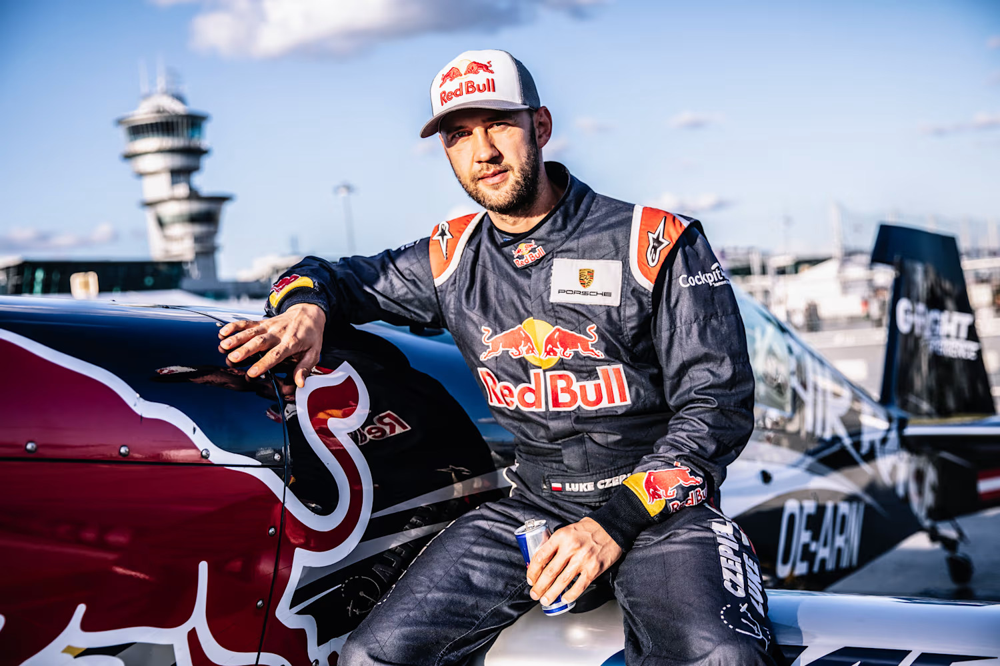
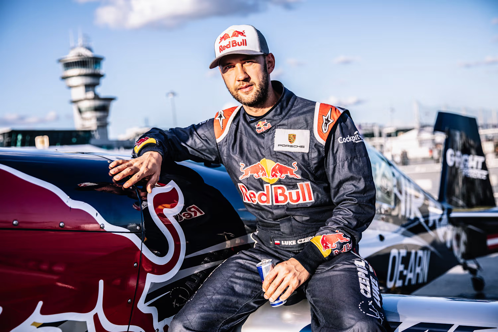

ATUAIS CAMPEÕES DAS AIR RACES
MASTER CLASS (2018)
Martin Šonka, República Tcheca

CHALLENGER CLASS (2018)
Luke Czepiela, Polônia
A Air Race é um esporte que utiliza pequenos aviões acrobáticos e é praticado globalmente. Embora se assemelhe ao automobilismo, não recebe tanta atenção da mídia. Muitas pessoas ainda não conhecem, mas aqueles que já assistiram garantem que a experiência é inesquecível. Um dos eventos mais renomados desse esporte é a Red Bull Air Race World Series.
Os concorrentes devem percorrer um circuito aéreo com obstáculos desafiadores e no menor tempo possível. Para isso, eles devem passar por grandes pilões especiais, ou air gates, enquanto lutam, ou melhor, voam contra o tempo. Nas corridas, atualmente 14 pilotos competem uns contra os outros. O vencedor da corrida é o competidor que realiza o melhor tempo depois de duas voltas no mesmo circuito. Os pilotos competem em um circuito torcido com cinco grupos de obstáculos especialmente erguidos do pilão do spinnaker. Voar com atitudes contras as regras ocasionam desqualificação ou acréscimo ao tempo de voo. Os seis primeiros pilotos de cada etapa do Air Race ganham de 6 a 1 ponto, ganhando o vencedor 6 pontos e o sexto colocado 1 ponto. O piloto que tiver mais pontos no fim da temporada se torna o campeão mundial do Red Bull Air Race.
Martin Šonka, República Tcheca
Luke Czepiela, Polônia
